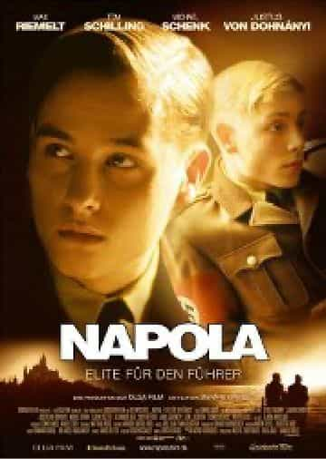
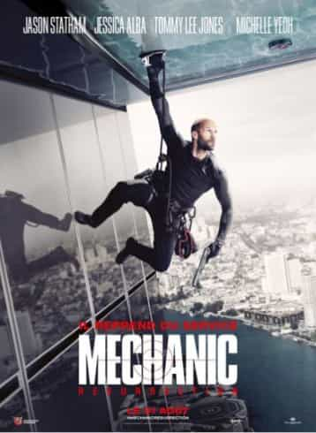

La possibilité d’un nouveau régime totalitaire Allemand en 2009 semble impossible. C’est pourtant ce que nous montre Dennis Gansel dans La Vague.
Affiche du film La Vague.
Dans la Vague, le public visé s’identifie très vite aux personnages. Des étudiants allemands doivent participer à des ateliers durant une semaine. Ce sont leurs professeurs qui animent ces stages. Nous suivons donc un professeur, Rainer Wenger et sa classe pendant une semaine. Le sujet imposé est l’autocratie. L’autocratie est définie par les pleins pouvoirs donnés à une unique personne. Le débat durant la première journée parle de la prévention faite pour éviter les régimes totalitaires. Pour les élèves, il est aujourd’hui impossible que l’Allemagne connaisse à nouveau cela. Le professeur aimerait leur prouver le contraire. Il va mettre en place un jeu. Ce jeu va déraper petit à petit. Tout d’abord chaque étape du film montre comment peut se construire un régime totalitaire. Il montre aussi comment sont traités les personnes résitantes ou n’appartenant pas au groupe. Il est très compliqué, une fois le processus lanc”, de stopper ce mouvement sans qu’il y ait des conséquences.
Une influence involontaire
Au début du jeu se fait pour déstabiliser le cours à l’étage. Le professeur s’y trouvant ayant choisi le sujet que voulait Wenger : l’anarchie. Petit à petit des règles se mettent en place. Appeler le proffesseur Monsieur Wenger, se mettre debout lorsque l’on nous donne la parole, porter l’uniforme choisi, proliférer le. Réunion des adeptes La Vague.
Les élèves se mettent dans leurs rôles et pour certains beaucoup trop. Ils vont jusqu’à taguer le symbole en ville, bloquer l’accès à certains lieux aux élèves nintégrant pas la Vague. Durant leur escapade en ville des élèves se retrouvèrent face à des junkies. Pour riposter, un des élèves, Tim sorti une arme. Il les menaça au nom de la Vague. Tim est un personnage qui ne différencie plus le jeu de la rélité. Avant la vague, il était rejeté par les autres. Pour lui, la Vague est réelle. Jusqu’à brûler tout autres habits.
Des avertissements en l’air
Sur l’ensemble de la classe seulement deux élèves se rebellent contre ce début de dictature. Karo et Mona. À plusieurs reprises elles vont tenter de les alerter sur la malveillance et la perversité de ce jeu. Mais personne n’en tient compte. Un soir alors que Wenger rentrait chez lui, il fut accueilli par Tim. Celui-ci décida qu’il fallait au dirigeant une sécurité contre l’ennemi.
Une des élèves qui proteste contre ce jeu
A ce moment là, Wenger prit conscience de l’ampleur qu’avait pris cet atelier. Il décide d’organiser une réunion. Il voulait montrer aux élèves jusqu’ou seraient-ils prêts à aller pour la Vague. Il leurs demanda de faire le procès des “rebelles”. Malheureusement le dénouement se passera autrementque ce qu’il imaginait...
Bande Annonce
Autres ouvrages de l'auteur

Napola - Elite Für Den Führer
Cette plongée dans les écoles d’élite du IIIème Reich galce les sangs par son extrême violence psychologique et l’efficacité de sa réalisation.

Mechanic Resurrection
La plastique de Jessica Alba, les cascades vertigineuses de Jason Statham et les paysages à couper le souffle, de Rio à Bangkok, sont les principaux atouts de cet action movie percutant.